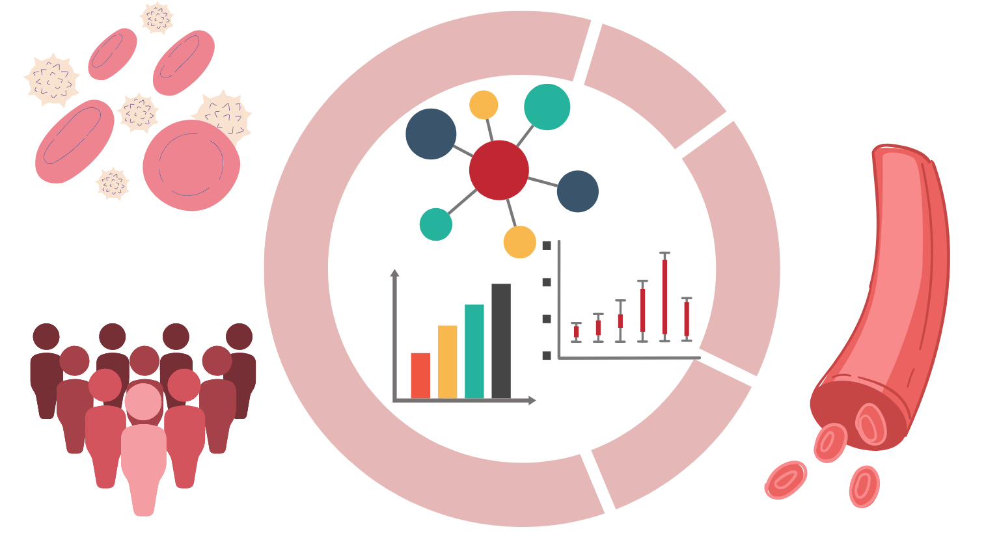
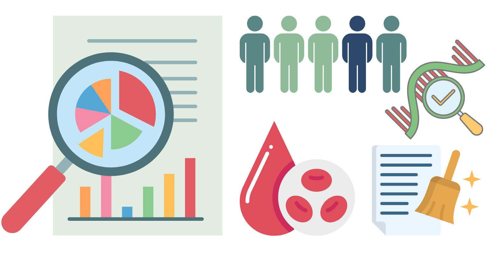
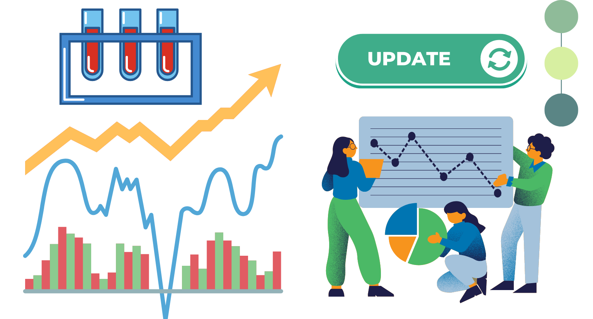
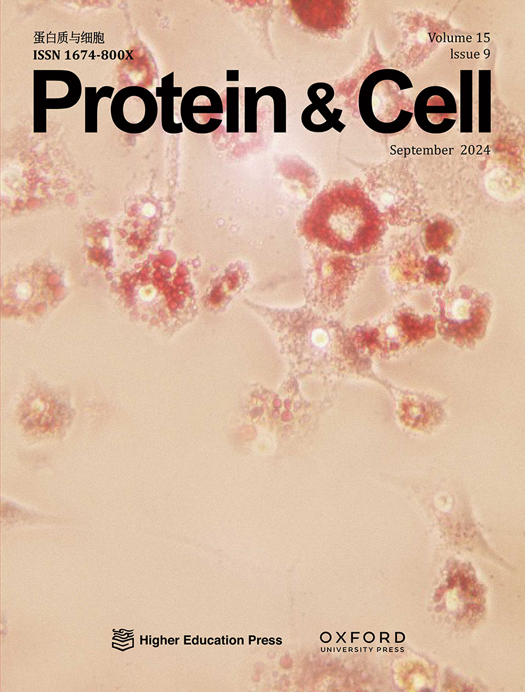
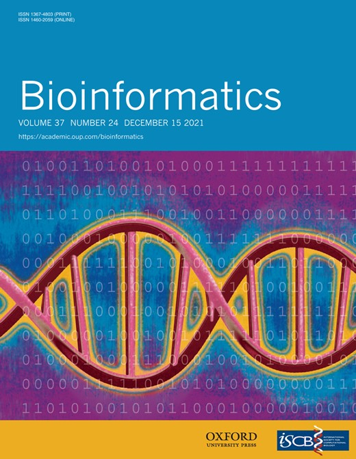
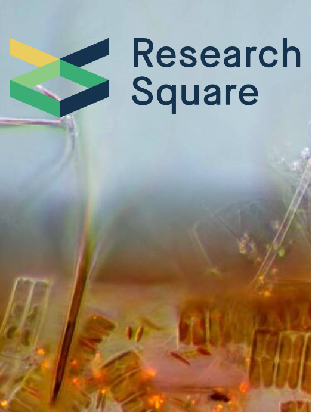
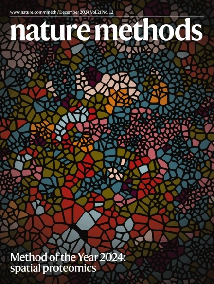
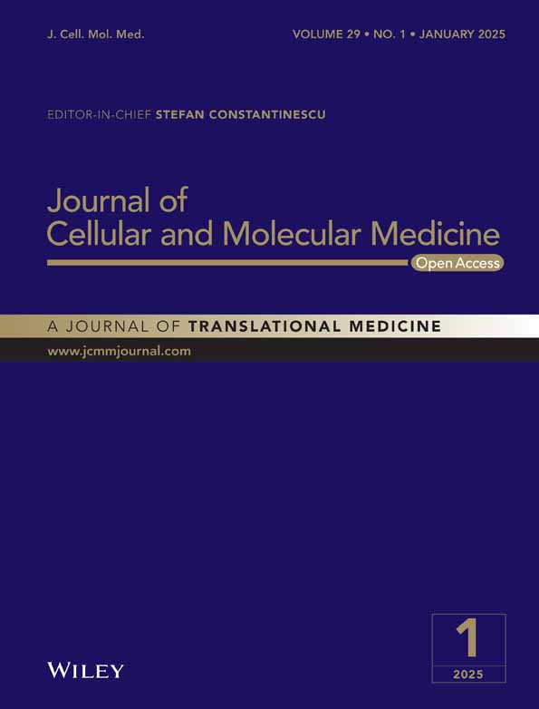
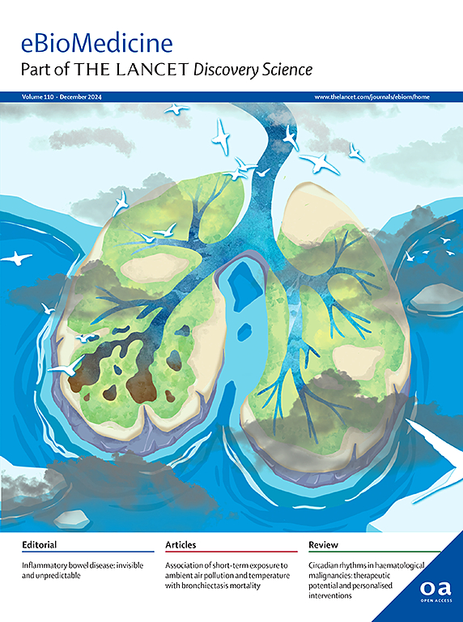

Welcome to BloodCircR！
BloodCircR is a comprehensive database of human blood circular RNAs (circRNAs) and an integrative platform for analyzing their expression in human blood samples from RNA-seq studies. CircRNAs are single-stranded RNA molecules with a unique closed-loop structure and critical biological functions. Abnormal circRNA expression has been associated with various human diseases, including cancer, neurodegenerative disorders, cardiovascular diseases, and immune system abnormalities. Due to their exceptional stability, abundant expression in blood, and high disease specificity, circRNAs are emerging as promising blood-based biomarkers for diagnosing and monitoring human diseases.
BloodCircR is a comprehensive database of human blood circular RNAs (circRNAs) and an integrative platform for analyzing their expression in human blood samples from RNA-seq studies. CircRNAs are single-stranded RNA molecules with a unique closed-loop structure and critical biological functions. Abnormal circRNA expression has been associated with various human diseases, including cancer, neurodegenerative disorders, cardiovascular diseases, and immune system abnormalities. Due to their exceptional stability, abundant expression in blood, and high disease specificity, circRNAs are emerging as promising blood-based biomarkers for diagnosing and monitoring human diseases.



Publications






Links

Contact us
If you have any questions or suggestions, please fill the form below.(*Required)
Comments